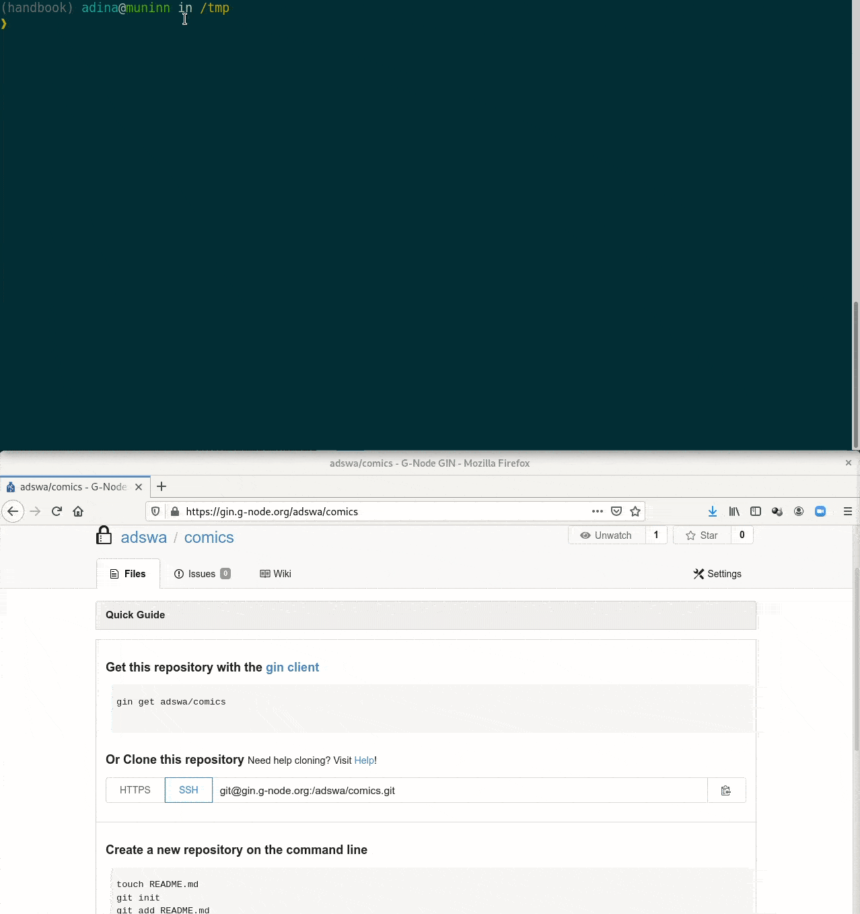
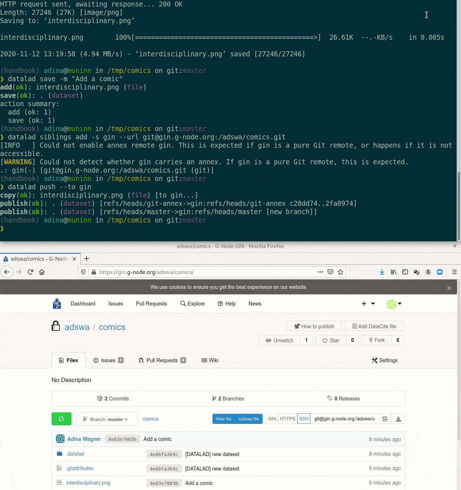
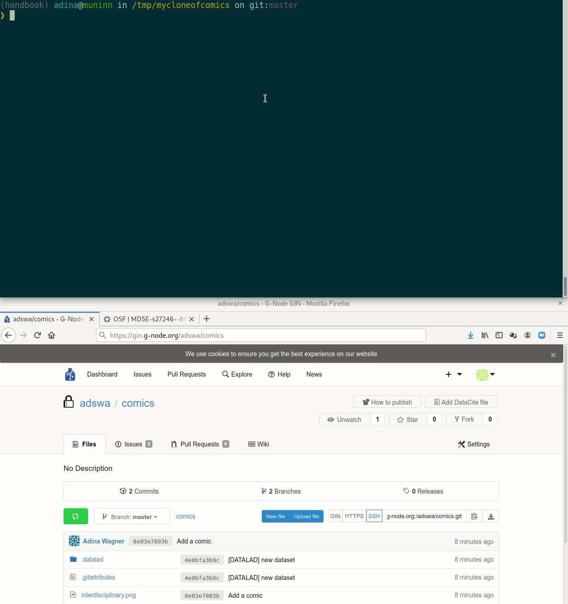
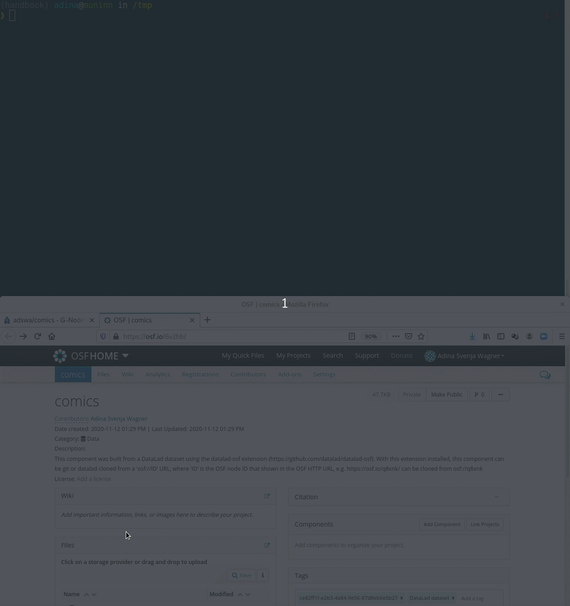
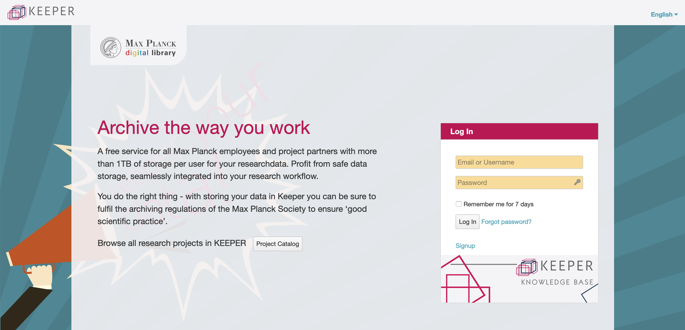
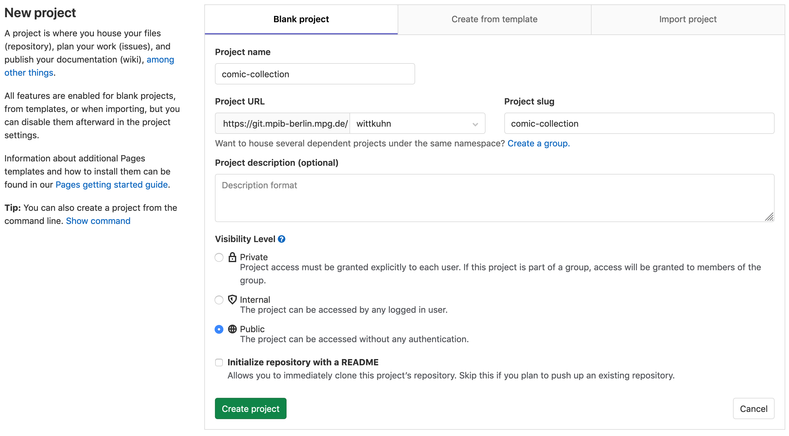
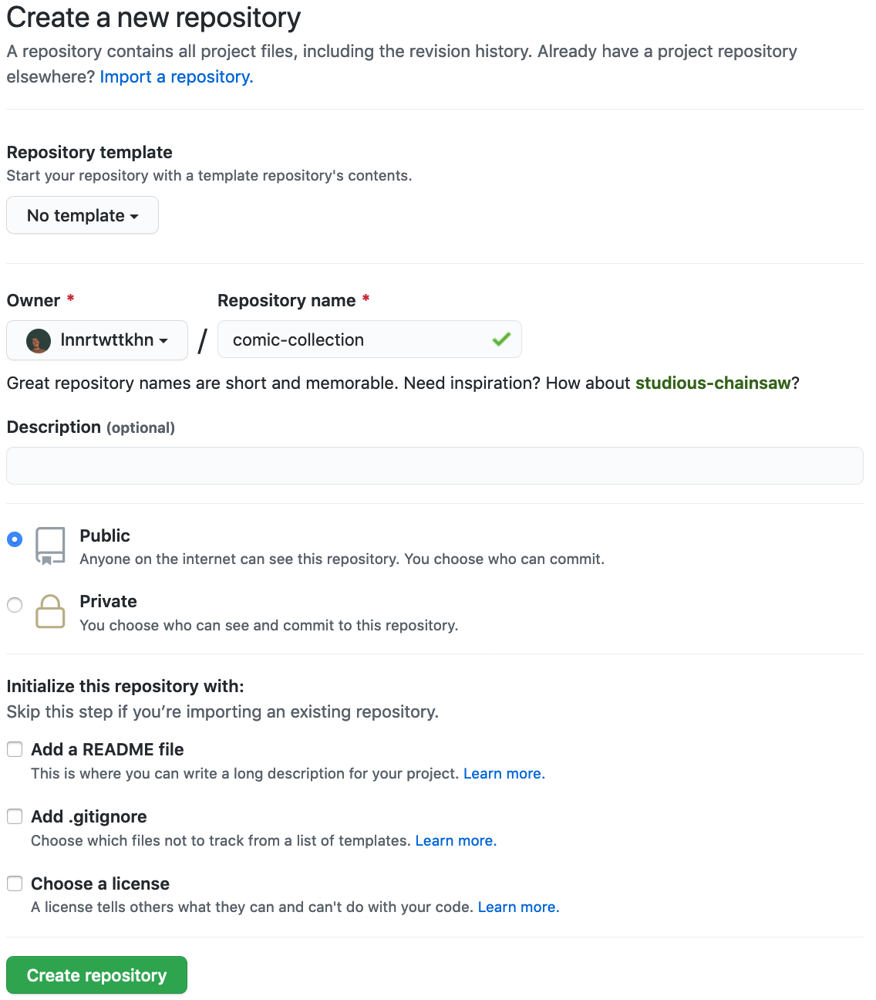
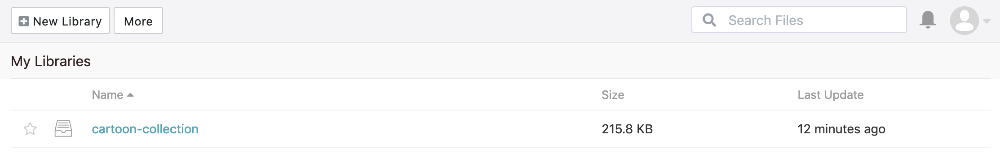
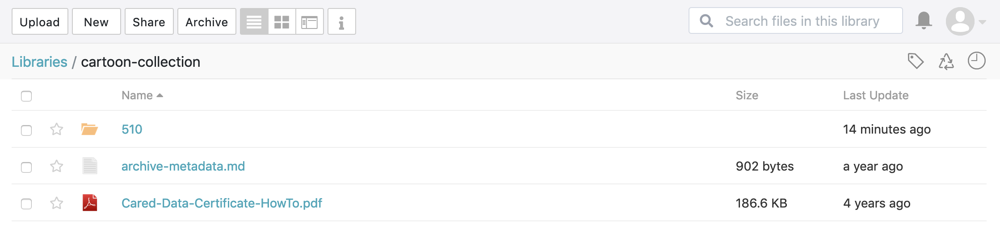
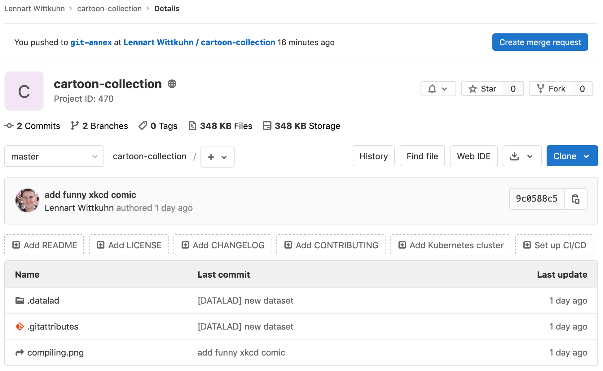

Publishing data
Transport logistics
- Share data like source code
- Datasets can be cloned, pushed, and updated from and to local paths, remote hosting services, external special remotes

- Flexible data access management for annexed file contents based on storage location
Interoperability
- DataLad is built to maximize interoperability and use with hosting and storage technology

Interoperability
- DataLad is built to maximize interoperability and use with hosting and storage technology

Publishing datasets
I have a dataset on my computer. How can I share it, or collaborate on it?
Publishing datasets
- Most public datasets separate content in Git versus git-annex behind the scenes

Publishing datasets

Publishing datasets

Publishing datasets
Typical case:- Datasets are exposed via a private or public repository on a repository hosting service
- Data can't be stored in the repository hosting service, but can be kept in almost any third party storage
- Publication dependencies automate pushing to the correct place

Publishing datasets
$ git config --local remote.github.datalad-publish-depends gdrive Publishing datasets
- Real-life example:

Publishing datasets
Special case 1: repositories with annex support
Publishing datasets
Special case 2: Special remotes with repositories
Publishing datasets
Special case 1: repositories with annex support Publishing datasets
Special case 2: Special remotes with repositories Cloning DataLad datasets
How does cloning dataset feel like for a consumer?
Cloning DataLad datasets
How does cloning dataset feel like for a consumer?
Cloning DataLad datasets
How does cloning dataset feel like for a consumer?
Cloning DataLad datasets
Let's take a look at the special cases: Cloning DataLad datasets
Let's take a look at the special cases: Data sharing using Seafile / Keeper

More info: DataLad Handbook chapter on Third party infrastructure
Keeper (Seafile): A flexible DataLad sibling
https://keeper.mpdl.mpg.de/Keeper offers 1TB flexible storage to all Max Planck employees * 
* Even if you end up not using DataLad, you might want to check Keeper out and get those 1TB of storage space!
* Data are stored on servers of the Max Planck Society - your data protection officer will be pleased!
Creating a remote repository
On GitLab (here, of the MPIB) ... Creating a remote repository
... or on GitHub:
Our comic collection is published!
  ... will allow them to access the annexed contents of your dataset!
(after they successfully configured the seafile rclone special remote)
$ datalad siblings -d "/Users/wittkuhn/Desktop/cartoon-collection" enable -s seafile
.: seafile(?) [git]
$ datalad siblings # just checking if all siblings are configured
.: here(+) [git]
.: seafile(+) [rclone]
.: origin(-) [https://git.mpib-berlin.mpg.de/wittkuhn/cartoon-collection.git (git)]
$ datalad get compiling.png
get(ok): compiling.png (file) [from seafile...]